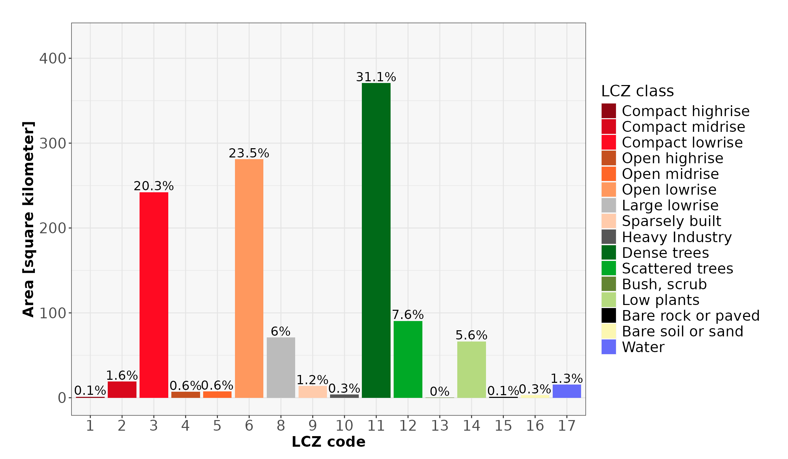

Introduction to the General Functions of LCZ4r
Max Anjos
2023-11-11
Source:vignettes/Introd_general_LCZ4r.Rmd
Introd_general_LCZ4r.RmdThis vignette serves as an introduction to the general
functions of the LCZ4r package. These functions
comprise a suite of R tools designed to facilitate the retrieval,
analysis, and visualization of Local Climate Zones (LCZ) when
LCZ-specific data is not readily available. The general
functions are engineered to compute LCZ classes and extract
specific parameters of interest, including but not limited to the Sky
View Factor (SVF), impervious surface fraction, and roughness element
height, among others.
Getting Started
The LCZ4r package fundamental functions, each serving a unique purpose:
| Function | Description | Data Required | Internet Access Required |
|---|---|---|---|
lcz_get_map() |
Obtain the LCZ map | Not needed | Yes |
lcz_get_map2() |
Obtain the LCZ map | Not needed | Not needed |
lcz_plot_map() |
Visualize the LCZ map | Not needed | Not needed |
lcz_cal_area() |
Calculate LCZ areas | Not needed | Not needed |
lcz_get_parameters() |
Retrieve LCZ parameters | Not needed | Not needed |
lcz_plot_parameters() |
Visualize LCZ parameters | Not needed | Not needed |
Happy coding, and enjoy exploring the LCZ4r package!
Obtain an visualize the LCZ map
The lcz_get_map() function allows you to obtain the LCZ
map for your city or a specific Region of Interest (ROI) using the
global LCZ map developed by Demuzere et al. (2022). In the rare cases
when this function encounters inconsistencies, you can rely on the
lcz_get_map2() as an alternative.
library(LCZ4r)
# Get the LCZ map for your city, e.g., "Rio de Janeiro"
lcz_map <- lcz_get_map(city="Rio de Janeiro")
#> Congratulations! You've successfully got Rio de Janeiro LCZ map.
# Visualize the obtained LCZ map
lcz_plot_map(lcz_map, isubtitle = "Rio de Janeiro")
#> Congratulations! You've successfully generated the LCZ map.
Calculate LCZ areas
This lcz_cal_area() function is designed to calculate
the Local Climate Zone (LCZ) areas. You can use it like this:
#E.g., "Rio de Janeiro"
LCZarea <- lcz_cal_area(lcz_map, iplot = TRUE)
#> That's cool! You've successfully calculated the LCZ area classes.
LCZarea
Retrieve and visualize LCZ parameters
This lcz_get_parameters() function allows you to
retrieve various LCZ parameters, including minimum, maximum, and mean
values, sourced from Stewart and Oke (2012). These parameters can be
converted into either shapefiles or raster stacks.
Here’s a glimpse of the available LCZ parameters:
| Code | Parameter | Description | Unit |
|---|---|---|---|
| SVF1 | Sky View Factor | Minimum Sky View Factor | [0-1] |
| SVF2 | Sky View Factor | Maximum Sky View Factor | [0-1] |
| SVF3 | Sky View Factor | Mean Sky View Factor | [0-1] |
# Extract the LCZ parameters
LCZpar <- lcz_get_parameters(lcz_map, istack = TRUE)
#> You've successfully generated a raster stack of all LCZ parameters.
# Visualize the selected parameter, for instance, Maximum Sky View Factor
lcz_plot_parameters(LCZpar, iselect = "SVF3", isubtitle = "Rio de Janeiro")
#> You've generated SVF3 LCZ parameter map.